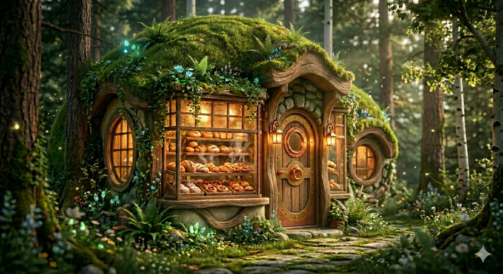

Our Story

Tucked away beneath the canopy of a quiet forest, the Enchanted Bakery is a place where magic and baking come together. Each recipe is crafted with care, using ingredients gathered from the woodland—golden honey, wild berries, and herbs said to glow under moonlight. The bakery was founded to share warmth, comfort, and a touch of wonder with any traveler lucky enough to find it. Whether you stop by for a simple loaf of bread or a sparkling dessert, every treat is made to feel a little bit magical.